Array Behavior
Arrays are simple, popular, and built-in to the C language and they have certain characteristics, both good and bad.The Good:
This is our algorithm:
/* Prints each value in the integer array */
void print_array(int array[], int size)
{
int i; /* Loop variable */
for (i = 0; i < size; i++)
printf("%i ", array[i]);
printf("\n");
}
int main(void)
{
int numbers[30]; /* Array to hold the numbers (arbitrary size) */
int count = 0; /* Keep track of how many numbers read in */
/* Open a file for reading */
FILE *fp = fopen("numbers.txt", "r");
/* Check that the file opened... */
/* While there are more numbers in the file */
while (!feof(fp))
{
int number; /* Value from the file */
/* Read in a number */
if (fscanf(fp, "%i", &number) == 0)
break;
/* Add the number to the end of the array */
numbers[count++] = number;
}
/* Close the file */
fclose(fp);
/* Print the array */
print_array(numbers, count);
return 0;
}
Possible "fixes":
Linked Lists
We'd like to overcome the limitations of arrays. One way is to use a linked list. So, what is a Linked List?
struct NODE
{
int number; /* data portion */
struct NODE *next; /* pointer portion */
};
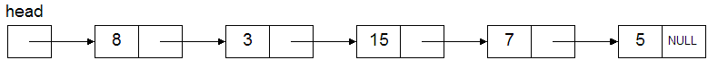
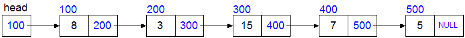
When the compiler encounters a structure member, it must know the size of the member. Since the size of all pointers is known at compile time, the code above is completely sane and legal. (Also, the compiler already knows what a NODE is.)
This example code:
can be visualized as this:/* #1 Declare 3 structs */ struct NODE A, B, C; /* #2 Set the 'data' portions of the nodes */ A.number = 10; B.number = 20; C.number = 30; /* #3 Connect (link) the nodes together */ A.next = &B; /* A's next points to B */ B.next = &C; /* B's next points to C */ C.next = NULL; /* Nothing follows C */
After #1
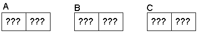After #2
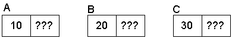After #3
With arbitrary addresses
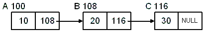The "problem" with this approach, is that we are declaring (and naming) all of the nodes at compile time. If we wanted to read a list of 30 integers from a file, we'd need to declare 30 NODE structs. We're worse off than with arrays.
Notice from the diagram that naming struct B and C is redundant. Also remember that we don't "name" our individual elements of an array. We refer to them by supplying a subscript on the array name:
This principle of "anonymous" elements will apply to linked lists as well:int numbers[30]; /* 30 "anonymous" elements */ numbers[5] = 0; /* We don't have a "name" for the 6th element */
printf("%i\n", A.number); /* 10 */
printf("%i\n", B.number); /* 20 */
printf("%i\n", C.number); /* 30 */
printf("%i\n", A.number); /* 10 */
printf("%i\n", A.next->number); /* 20 */
printf("%i\n", A.next->next->number); /* 30 */
Just like arrays go hand-in-hand with looping, so do linked lists. This is the common method of using a loop to "walk" the list:Because the next field of the NODE structure is a pointer to a structure, you must use the arrow operator, ->, when accessing the members of its structure.
struct NODE *pNode = &A; /* Point to first node */
while (pNode)
{
printf("%i\n", pNode->number); /* Print data */
pNode = pNode->next; /* "Follow" the next pointer */
}
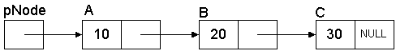
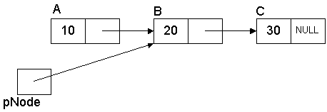
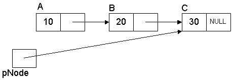
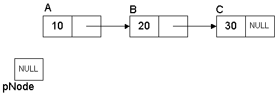
Problem Revisited
Let's revisit the original problem of reading an unknown number of integers from a file:
| Old way: Array | New way: Linked list | |
|---|---|---|
|
|
int main(void)
{
struct NODE *pList = NULL; /* empty list */
/* 1. Open a file for reading */
FILE *fp = fopen("numbers.txt", "r");
/* Check that the file opened... */
/* 2. While there are more numbers in the file */
while (!feof(fp))
{
struct NODE *pNode; /* for the current number */
int number; /* the number just read */
/* A. Read next integer from the file */
if (fscanf(fp, "%i", &number) == 0)
break;
/* B. Allocate a new node struct (same for all nodes) */
pNode = malloc(sizeof(struct NODE));
pNode->number = number; /* Set the number */
pNode->next = NULL; /* Set next (no next yet) */
/* C. Add the new node to the end of the list */
/* If the list is NULL (empty), this is the first */
/* node we are adding to the list. */
if (pList == NULL)
pList = pNode;
else
{
/* Find the end of the list (don't move pList!) */
struct NODE *temp = pList;
while (temp->next)
temp = temp->next;
temp->next = pNode; /* Put new node at the end */
}
}
/* 3. Close the file */
fclose(fp);
print_list(pList); /* Display the list */
return 0;
}
Note these two sections especially:
/* Allocate a new node struct (same for all nodes) */ pNode = malloc(sizeof(struct NODE)); pNode->number = number; /* Set the number */ pNode->next = NULL; /* Set next (no next yet) */
/* If the list is NULL (empty), this is the first */
/* node we are adding to the list. */
if (pList == NULL)
pList = pNode;
else
{
/* Find the end of the list (don't move pList!) */
struct NODE *temp = pList;
while (temp->next)
temp = temp->next;
temp->next = pNode; /* Put new node at the end */
}
void print_list(const struct NODE *list)
{
while (list)
{
printf("%i ", list->number);
list = list->next;
}
printf("\n");
}
Also note that this very simple example does not do any error handling, especially the condition where malloc fails. In Real World™ code, you would need to have code that handles the case when malloc fails and deal with it accordingly.
Adding Nodes
Let's address the last two points now. First, this one: "The time it takes to add a node to the end of the linked list takes longer as the list grows."This is simply because we are adding to the end and we don't have any immediate (random) access to the end. We only have immediate access to the first node; all of the other nodes must be accessed from the first one. If the list is long, this can take a while.
Solution #1: Maintain a pointer to the last node (tail).
We add a pointer variable to track the tail:
struct NODE *pList = NULL; /* empty list */ struct NODE *pTail = NULL; /* no tail yet */
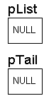
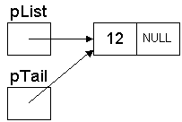
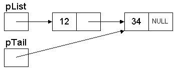
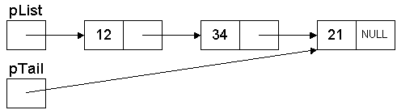
Solution #2: Insert at the head of the list instead of the tail. This is simpler yet. This has the "feature" that the items in the list will be reversed.
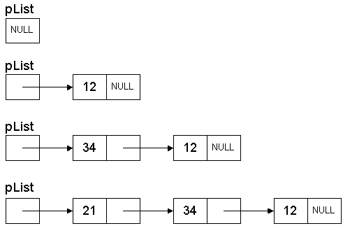
When the order of the items in the list is not important to preserve, use Solution #2. This is the canonical way of dealing with a single-linked list. It's simple, efficient, and very easy to code and understand.
Freeing Nodes
Up until now, we haven't freed any of the nodes. Since we called malloc for these nodes, we have to call free when we're through. This is straight-forward using another while loop:
while (pList)
{
struct NODE *temp = pList->next;
free(pList);
pList = temp;
}
Notes thus far:
Creating Functions
The code that was shown thus far manipulates all of the nodes in the list directly. What this means is that the lists were not "passed" to another function to do the work. In real code, you would create functions to do things such as AddToEnd, AddToFront, DeleteFront, FindItem, etc. The reason to do this is simple: we want to be able to re-use the functionality so that we can perform these operations on any list.However, there is a slight caveat. Something that we've discussed many times before but still confuses many new programmers: Passing a pointer in to a function. Remember these points about passing parameters to functions:
This means that, instead of passing the head node to the function, we need to pass a pointer to the head node to the function. This will allow the function to change what the head pointer will point at.
So, a function to add a node to the head of a list would be prototyped something like this (assuming a linked list of integers):
/* Adds a node to the front of the list */ void AddToFront(struct NODE **ppList, struct NODE *pNode);
void AddToFront(struct NODE **ppList, struct NODE *pNode)
{
/* The new node's next pointer will point at the first node */
pNode->next = *ppList;
/*
* Now, the head pointer points at the new node, which is now at the front.
* Notice that we are dereferencing the pointer to modify the original head pointer.
* The client passed in the address of the head pointer so we could change it.
*/
*ppList = pNode;
}
There is nothing fancy or weird or exotic about passing pointers to pointers. The only way a function can change the original data is if it receives a pointer to the data. If the data happens to be a pointer itself, then a pointer to the pointer must be passed in order to change it. This is why some of the linked list functions must pass pointers to pointers to nodes.
An Ordered List
The previous examples have added the data (integers) to the list in the order they arrived from the file. (Inserting at the front of the list caused the data to be reversed.) This is no different than the way you would add elements to an array.Suppose we want to keep the linked list sorted, from smallest to largest. This is the data that is in the file:
We just need to modify our while loop in the code above that adds a node to the list. Instead of walking to find the end (or using a tail pointer), you would walk the list until you encountered a value that was greater than (or equal to) the value you are inserting.12 34 21 56 38 94 23 22 67 56 88 19 59 10 17
The final list would look like this:
If we insert a call to print_list after every insertion into the list, we can see the list evolve. The bold indicates newly inserted numbers:10 12 17 19 21 22 23 34 38 56 56 59 67 88 94
Try doing that with an array! (By the way, how would you do this with an array?)pList → 12 pList → 12 → 34 pList → 12 → 21 → 34 pList → 12 → 21 → 34 → 56 pList → 12 → 21 → 34 → 38 → 56 pList → 12 → 21 → 34 → 38 → 56 → 94 pList → 12 → 21 → 23 → 34 → 38 → 56 → 94 pList → 12 → 21 → 22 → 23 → 34 → 38 → 56 → 94 pList → 12 → 21 → 22 → 23 → 34 → 38 → 56 → 67 → 94 pList → 12 → 21 → 22 → 23 → 34 → 38 → 56 → 56 → 67 → 94 pList → 12 → 21 → 22 → 23 → 34 → 38 → 56 → 56 → 67 → 88 → 94 pList → 12 → 19 → 21 → 22 → 23 → 34 → 38 → 56 → 56 → 67 → 88 → 94 pList → 12 → 19 → 21 → 22 → 23 → 34 → 38 → 56 → 56 → 59 → 67 → 88 → 94 pList → 10 → 12 → 19 → 21 → 22 → 23 → 34 → 38 → 56 → 56 → 59 → 67 → 88 → 94 pList → 10 → 12 → 17 → 19 → 21 → 22 → 23 → 34 → 38 → 56 → 56 → 59 → 67 → 88 → 94
Doubly Linked Lists
A doubly linked list is a list that has two pointers. In addition to the next pointer, it has a previous pointer. This allows you to traverse the list in both directions.An example node structure for a doubly linked list:
struct Node
{
int number; /* data portion */
struct NODE *next; /* node after this one */
struct NODE *prev; /* node before this one */
};
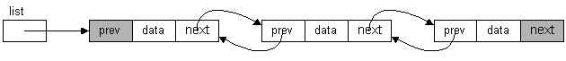
Compared with singly linked lists, double linked lists:
Linked List Summary
To summarize, linked lists:Why not do away with arrays and use linked lists for all lists?